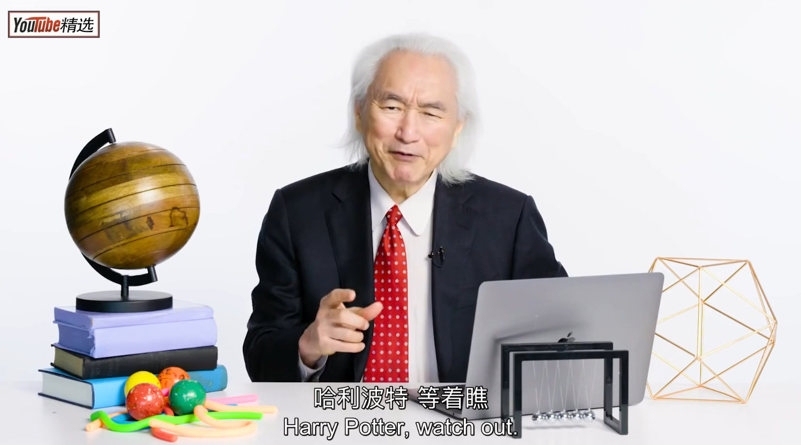

我又想起了这位同事……@斯图亚特9:在二三月份的时候，全组聚餐，有个同事说他坚定地相信比特币，存有100多比特币。不久这位同事工作表现不好离开了公司，在我们视线中消失了。前些天，在看到比特币价格今年翻了60番之后，我突然想起了他。
畅销书作家！看过他两本书。都很不错！//@lby9:这日本人英语不错…//@huangyi1979://@YouTube精选:繁杂的物理问题也能讲得生动有趣，老爷子真的厉害//@PYRO_許願機大法RB動畫化待機: 深入淺出的典範//@小陈今天Depress了吗: 一口气听完真的意犹未尽@YouTube精选:【物理学家 加来道雄 回答网络热门物理问题】WIRED频道这次大手笔了，他们邀请了世界著名的理论物理学家 加来道雄 来做客，回答网友们提出的奇思妙想——什么是弦论？时空到底有多少维度？能不能发明一个真正完全隐形的东西？黑洞真的是无限大密度吗？到底什么是暗物质？多年的写作和演讲经验，让加来道雄以最简单最有趣的方式，对这些问题作出了科普。如果你不是专业相关工作者，那么这支视频非常值得一看。(YouTube: WIRED) YouTube精选的微博视频 106万次播放 16:19